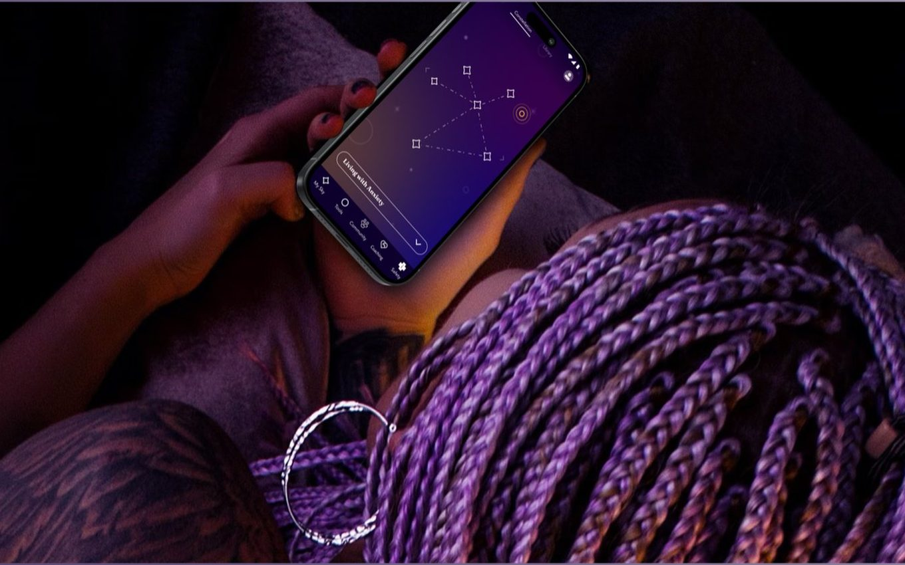
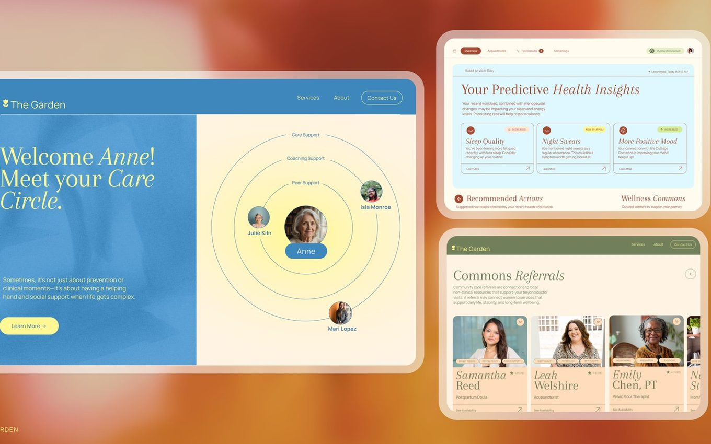
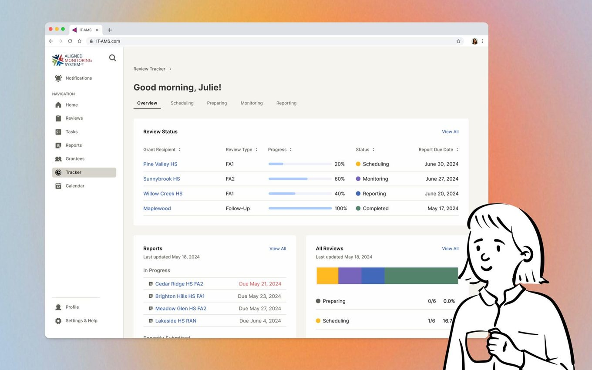
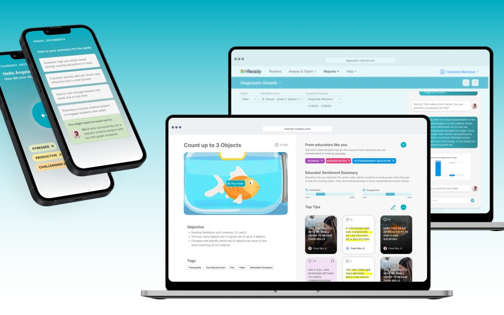

Usually somewhere in the messy middle of a project: the field research, the journey map, the prototype, and the argument about what to cut.
Four projects, and what I actually did on each
A free mental health app for every teen in California. 160,000 have signed up so far.

A women’s health system that remembers you between visits, mapped across six life stages.

Federal Head Start grant review, rebuilt around the reviewers who actually do the work.

An AI partner for teachers that knows when to hand the question to another teacher.
A bit more about how I work, and where the resume lives.